つなよしキッチンでおてつだい
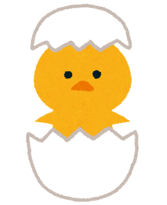おてつだい初級編
おつかいで迷わない！おいしい食材・調味料-
 しょうゆ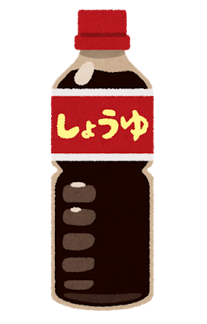
しょうゆ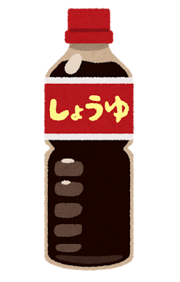ヤマサしょうゆ
普通のしょうゆ。主に炒めなどに使う。 -
生しょうゆ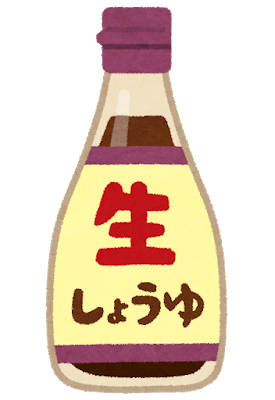
ヤマサ 鮮度生活絹しょうゆ
まろやかなしょうゆ。主に加熱しない料理に使う。
まろやかなので、火を通す料理で味見をして、
塩味は足りているけどしょうゆ味がもう少し欲しい、
というときにも使える。 -
だし醤油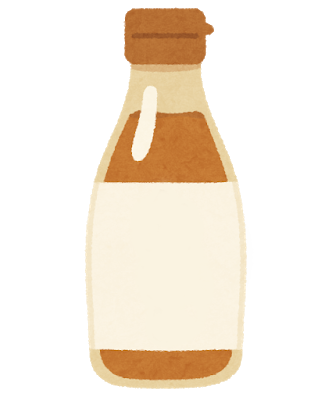
鎌田のだし醤油
だしの風味がすごいしょうゆ。少しで十分。
汁があるような料理で、普通のしょうゆに少し
これを加えると風味が良くなる。
生で食べてもおいしい。
カルディの鯛だし醤油も特に魚料理でおいしい。 -
 岩塩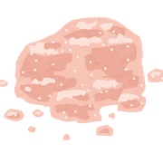
岩塩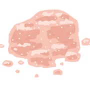スパイスアップ ヒマラヤピンクソルト
カルディで買えるピンクの塩。
ステーキもこれだけですごくおいしい。 -
お酢
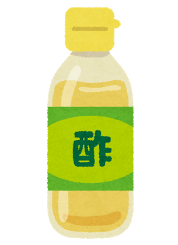ミツカン 穀物酢
お酢の定番。
業務スーパーで売っているタマノイもおいしい。 -
黒酢
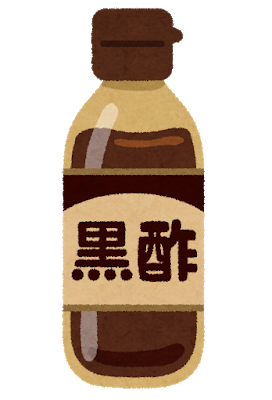老騾子 中国鎮江香酢
アメ横などでも買える中国の有名な黒酢。
餃子のタレや酢豚に少し入れると深みが出る。 -
 ホタテだし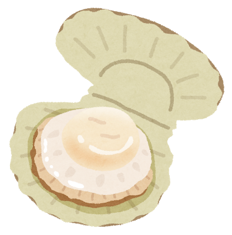
ホタテだし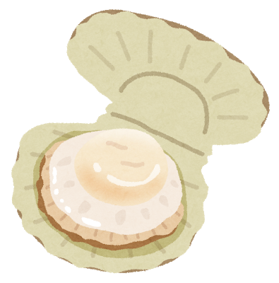味の素KK 干し貝柱スープ
おいしいホタテだし。
魚介類料理にはもちろん、魚がなくても
これを入れれば雰囲気が味わえる。
白いおかゆに入れてもおいしい。 -
 納豆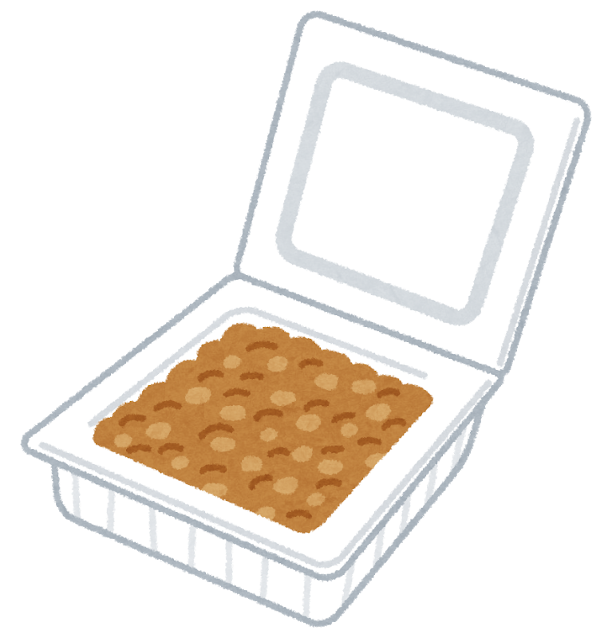
納豆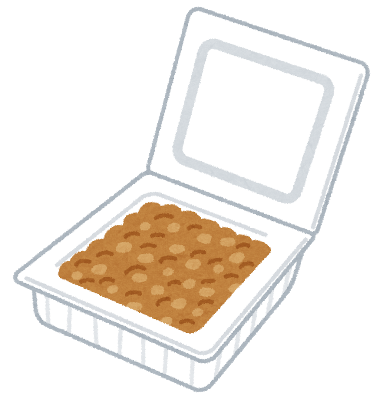おかめ納豆 国産丸大豆納豆
つなよしママが納豆の中で一番好きな大粒の納豆。
納豆にはマヨネーズを少し入れるとおいしい。 -
とうふ
おかめ納豆 絹美人
生で食べてもおいしいとうふ。
一人でもちょうどいいサイズ。
おてつだい中級編
これで楽々おてつだい！台所の便利グッズ-
ヘラ
100均のシリコンのヘラ(半透明)
縁に厚みがないので、何にでも使いやすい。
ボウルの中の卵液、タレなどを鍋に入れるときも
ボウルの中身をきれいに出せる。
野菜炒めやお肉をひっくり返すのもこれでできる。 -
ピーラー
キャンドゥのピーラー (白・赤・黒)
キャンドゥで売っている3色展開のピーラー。
シンプルだけど結構使いやすい。 -
お箸
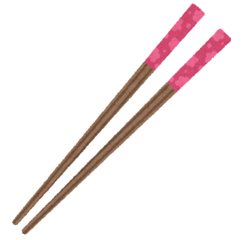のぼう 若狭塗箸
たまに百貨店に出店しているお箸やさんのお箸。
こんにゃくもゆで卵も滑らずつかめるすごい箸。
菜箸もあるので、崩れやすい煮物も安心。
-
ポリ袋
ミシン目ロールのポリ袋
スーパーの野菜売り場や袋詰めコーナーにある袋。
お肉や魚に粉をまぶすとき、この袋に粉を入れて
この中で振るときれいにできる。後片付けも簡単。
おてつだい上級編
和・洋・中、それぞれのコツ-
和風にしたい
火は弱めで、困ったらだし醤油
・強火以上を使わないこと。
・和食では、臭みをとるための食材がほぼ無いのに、弱い火で加熱するので、
臭みが出やすい。
お肉、魚を使うときは、塩こしょう、酒をしっかりと。
・物足りなかったら、鎌田のだし醤油などでごまかしてみる。
・魚介系のときは、ホタテだしと鯛のだし醤油が合う。 -
中華を作りたい
火は強めで、味付けは目分量
・日本ではお鍋に油を入れてから火をつけるけど、中華では火→油→食材。
換気扇を忘れないこと。
・油っぽくなるのを気にして油を少なくしない。
強火で作れば吸わないので大丈夫。
・火の通りも早いので、味付けは目分量で素早く。 -
洋風にしたい
オリーブオイル・バター・コンソメ・岩塩
・いつものサラダ油のかわりに一部をオリーブオイルやバターにしてみる。
・いつもの鶏がらスープの素をコンソメに変えてみる。
・こうすると、いつもよりお肉や魚が岩塩に合う。